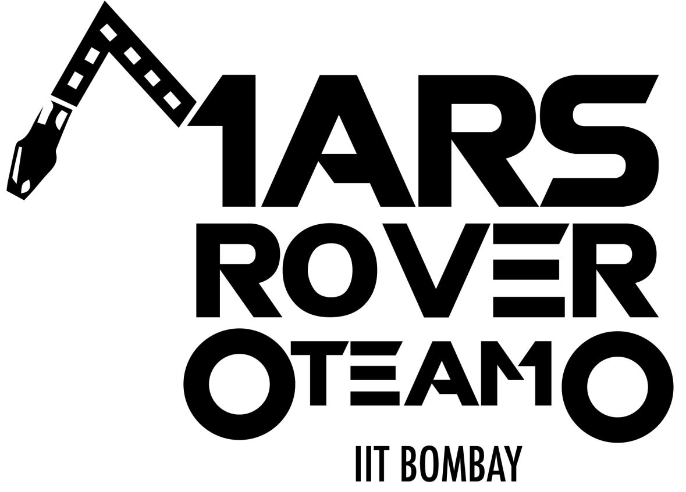
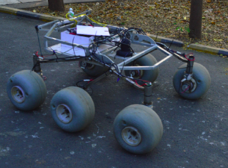
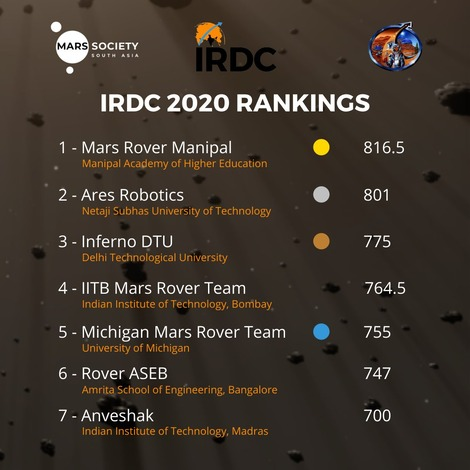

Mars Rover Team Timeline
The IIT Mars Rover team has been making ground-breaking progress over the years.
The Mars Rover team's accomplishments have been well-documented over the past few years. Every year, the team spends months designing and building a new rover, with each iteration pushing the boundaries of science and technology.
The story of how we got started
MRT was started by 5 students with the same mission.
Our story
starts 11 years ago... Strap in.
September 2012
The IITB Mars Rover team was established in 2012, and since
then, the team has been working relentlessly to achieve great success in the field
of interplanetary exploration. Over the past eight years, the team has grown from a
small group of students to a large organization with several members.

May 2015
Akrula 1.0 was the first prototype ever created by IITB Mars
Rover Team and it was launched in 2015. With its advanced sensors, powerful
computing systems and robust mobility, Akrula 1.0 is capable of navigating through
the harsh terrain of Mars with ease.

June 2016
The second Mars rover prototype, Agathsya 1.0, was built in
2016. Agathsya 1.0 has sophisticated navigational systems as well as data-gathering
cameras. It has sophisticated sensors and an advanced AI that can detect things in
real-time and evaluate data.
April 2017
Agathsya 2.0, the third version of the Mars rovers created in 2017, is revolutionizing our understanding of the Red Planet. Equipped with advanced camera and sensor technology, Agathsya 2.0 is able to explore even further and faster than any previous Mars rover.
May 2018
Hemant 1.0 is the fourth version of the Mars rovers created in 2018. It combines the latest AI technology with an innovative design, allowing it to traverse even the harshest terrain on Mars.
April 2019
Agruni 1.0 was the fifth version of the mars rover created by the IITB mars rover team.
December 2019
Finished among the top teams in University Rover Challenge (2019)

August 2020
4th place in International Rover Design Challenge

August 2021
Best navigation award among 28+ teams in European Rover Challenge

December 2022
Qualified for SDDR stage in IRC 2023 finals

Today
Today Mars Rover Team IITB is a team run by 50+ student with the same mission in life - Build meaningful
relationships and do great work.